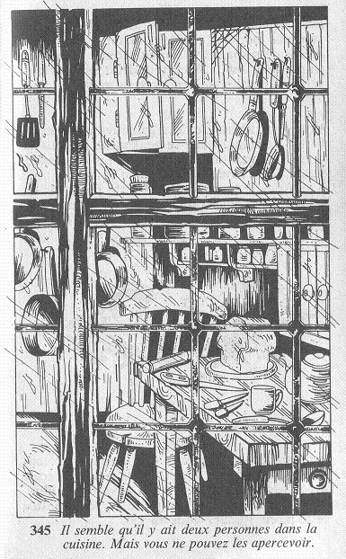

345
La fenêtre éclairée est proche d'une petite porte donnant sur une cuisine. Des voix proviennent de l'intérieur de la pièce, mais vous ne pouvez apercevoir les interlocuteurs qui doivent se tenir contre le mur, hors de votre champ de vision.
Tournez la page...
Vous tendez l'oreille pour essayer de saisir quelques mots de la conversation. Il semble qu'il y ait deux personnes dans la cuisine, et elles parlent avec excitation : « ... Le Maître est prêt, et je commence à être impatient, car c'est la première fois que je participe à cela. Etes-vous vraiment sûr qu'il va venir ? » Une autre voix d'homme répond plus calmement : « Cette affaire m'inquiète. Elle est si jeune ! De plus, elle est arrivée ici en toute innocence. Je ne sais vraiment pas... » Les deux hommes font quelques pas dans la cuisine, et vous pouvez enfin les voir. Tous deux sont vêtus de toges blanches, et l'un est beaucoup plus jeune que l'autre. Qu'allez-vous faire : allez-vous frapper à la porte en espérant qu'ils vous laisseront entrer (rendez-vous au 207 ), ou préférez-vous rester caché pour essayer d'en apprendre davantage (rendez-vous au 68 ) ?